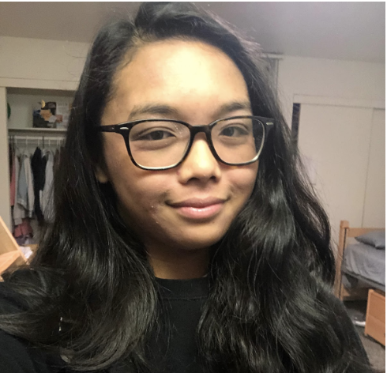
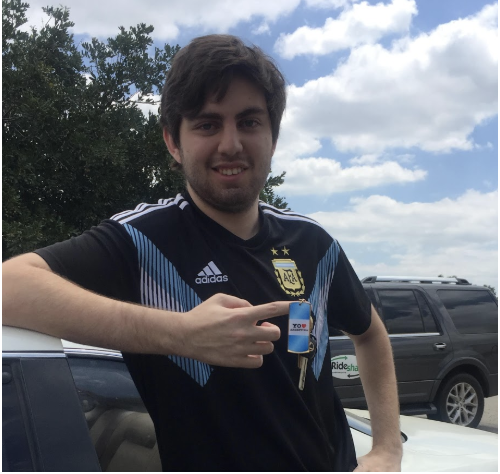

Hello! I'm Ally, a second-year Computer Science student at the University of California, Riverside. I enjoy hanging out with friends, numerous forms of art, various music genres, learning, and helping people in need! Being born and raised in the Bay Area, adjusting to Southern California was quite difficult. Having to play around with different schedules and budgets made making friends difficult. Scheduling is even more of a problem when I return home for breaks; conflicts with my California State University friends occur. Because the semester and quarter system breaks vary, it’s hard to keep connections between me and my high school friends. Being a young adult, this is probably the best time to make and maintain lifelong connections. A way to more easily deal with scheduling conflicts, however, is needed.
I am a second-year Computer Science student at the University of California, Riverside who loves to play video games, listen to music, and explore. When I was 3 years old, my dad introduced me to playing video games and ever since then they have been my passion. Eventually, towards the end of high school, I started to stream the games I play which took away a lot of time from spending time with my closest friends. Trying to manage my streaming schedule, school schedule, and social schedule became incredibly hard. Simply put, I did not know how to separate my streaming life from my social life. This problem still occurs to this day, and none of the available scheduling apps and services are intuitive or quick to use.

I’m a second-year Computer Science with Business Applications student at the University of California, Riverside. I took a computer science course during my third year of high school and have been enamored with coding since then. I aspire to develop video games in the future, preferably with Blizzard Entertainment. I enjoy playing video games, discovering and eating new delicious food, and going out with friends. However, ever since graduating from high school, I have found it increasingly difficult to make plans with friends, since they’re either from different cities, have other obligations to attend to, or difficult to get a hold on. Having a way to simplify the process would help with maintaining friendships and managing my schedule.
I am a second-year Computer Science student at the University of California, Riverside. My hobbies include playing ball sports, video games, and hanging out with friends. My first dive into computers and tech started when I started to customize my computer and jailbroken iPhone while I was dealing with a year-long injury that kept me out of tennis training and basketball at school. As an international student that’s busy during school and traveling during breaks and holidays, it is hard for me to meet up with friends who are also on the move and/or have different school and work schedule. The usual time frame to meet a returning or visiting friend might only be a few days to a week.

I am a second-year Computer Science Major at the University of California, Riverside. I enjoy playing games in tournaments and going out with my family. My entire family is in the medical field and I, being the youngest, am the only one branching out to tech and following my passions. My household moves quite often for their jobs so most of my close friends are out of town. Where a lot of time needs to be planned out to meet up for the sake of driving time, where I am staying and so on. I set schedules on a regular basis for my friends simply because the amount of time needed to even go to them is cumbersome. A method to show my friends when I have enough time to even make it worth going would be convenient.